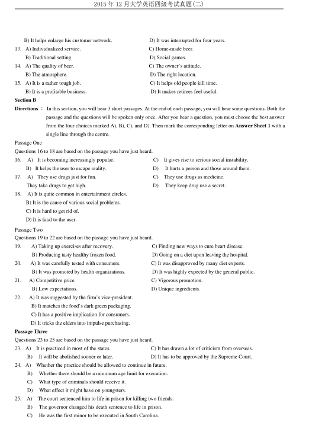
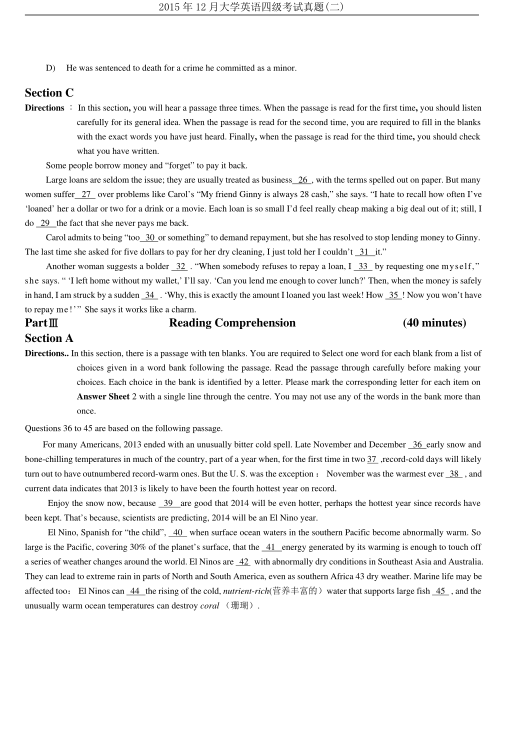
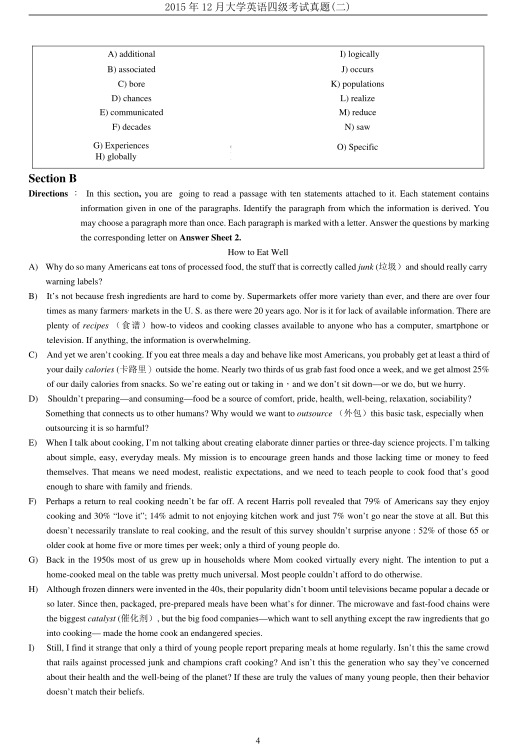
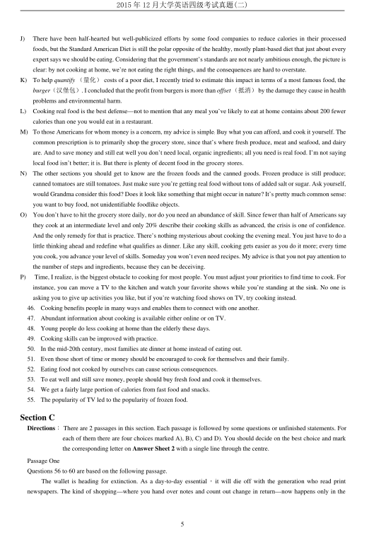
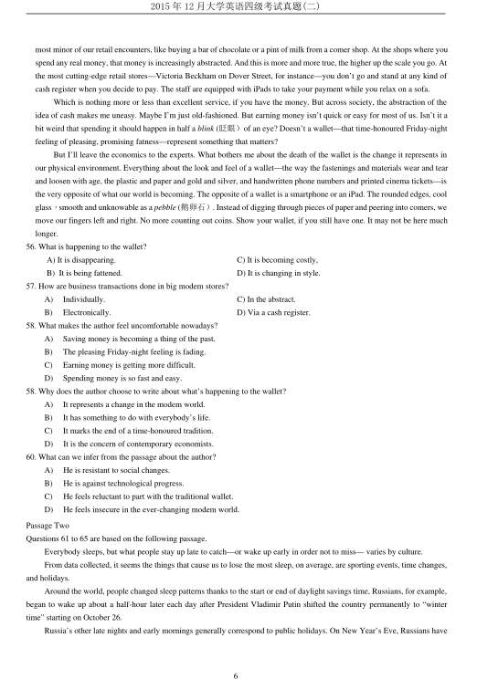
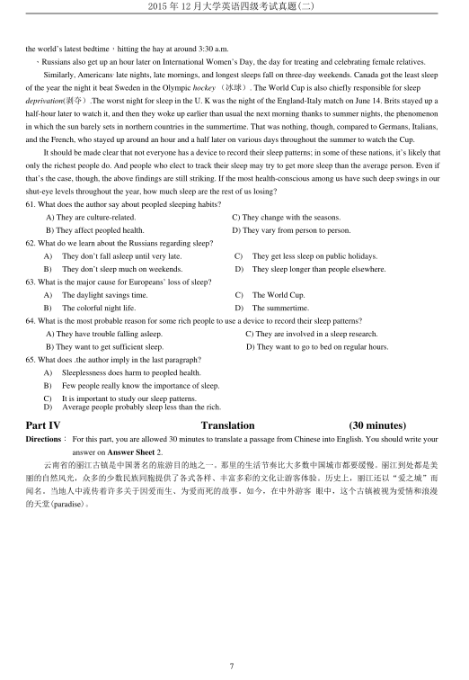

第 1 / 7 页

2015 年12 月大学英语四级考试真题(二)
2015 年12 月大学英语四级考试真题（第2 套)
Part I
Writing
(30 minutes)
Directions ：For this part, you are allowed 30 minutes to write an essay commenting on the saying “Learning is a daily
experience and a lifetime mission.” You can cite examples to illustrate the importance of lifelong learning.
You should write at least 120 words but no more than 180 words.
Part II
Listening Comprehension
(30 minutes)
Section A
Directions ：In this section, you will hear 8 short conversations and 2 long conversations. At the end of each conversation, one
or more questions will be asked about what was said. Both the conversation and the questions will he spoken
only once. After each question there will be a pause. During the pause, you must read the four choices marked
A), B), C) and D), and decide which is the best answer. Then mark the corresponding letter on Answer Sheet 1
with a single line through the centre.
1.
A) The agenda for the board of directors’ meeting.
B) The details of the meeting to be held next week.
C) The reason for the man’s absence from the meeting.
D) The time for the man’s visit to the woman’s company.
2.
A) At a travel agency.
C) In a library.
B) At a department store.
D) In a post office.
3.
A) He cannot hear the woman’s call.
C) He cannot recall the phone number.
B) He cannot get through to New York.
D) He cannot find a public phone nearby.
4.
A) Watch a movie with the woman.
C) Do some shopping with Jane.
B) Revise his thesis in the office.
D) Discuss his thesis with Prof. Hudson.
5.
A) He just cannot work properly without a watch.
B) He has no idea where he can buy a gold watch.
C) He still does not know where he left his watch.
D) He is not sure what went wrong with his watch.
6.
A) He forgot all about what he said.
C) He was sorry for being off sick last week.
B) He slipped and hurt his head.
D) He thought the woman’s car had been sold.
7.
A) She should try to catch an earlier bus.
C) She is always making excuses for being late.
B) She is absent from his class too often.
D) She should come up with a better excuse.
8.
A) He is going to help the woman out.
C) He is on his way to see a real estate agent.
B) He has to move out of the building soon.
D) He will stay with the woman’s brother.
Questions 9 to 11 are based on the conversation you have just heard.
9.
A) From the wanted column.
C) From a telephone directory.
B) From some of her friends.
D) From a television commercial.
10. A) She received full-time education abroad.
C) She finished her secondary school.
B）She graduated from an open university.
D) She studied in a vocational college.
11. A) She is a shorthand-typist.
C) She is a policewoman
B) She works as a tour guide.
D) She teaches an evening class.
Questions 12 to 15 are based on the conversation you have just heard.
12. A) It provides him with career opportunities.
C) It has been off and on for ten years.
查看 / 复制本页文字
2015 年12 月大学英语四级考试真题(二) 2015 年12 月大学英语四级考试真题（第2 套) Part I Writing (30 minutes) Directions ：For this part, you are allowed 30 minutes to write an essay commenting on the saying “Learning is a daily experience and a lifetime mission.” You can cite examples to illustrate the importance of lifelong learning. You should write at least 120 words but no more than 180 words. Part II Listening Comprehension (30 minutes) Section A Directions ：In this section, you will hear 8 short conversations and 2 long conversations. At the end of each conversation, one or more questions will be asked about what was said. Both the conversation and the questions will he spoken only once. After each question there will be a pause. During the pause, you must read the four choices marked A), B), C) and D), and decide which is the best answer. Then mark the corresponding letter on Answer Sheet 1 with a single line through the centre. 1. A) The agenda for the board of directors’ meeting. B) The details of the meeting to be held next week. C) The reason for the man’s absence from the meeting. D) The time for the man’s visit to the woman’s company. 2. A) At a travel agency. C) In a library. B) At a department store. D) In a post office. 3. A) He cannot hear the woman’s call. C) He cannot recall the phone number. B) He cannot get through to New York. D) He cannot find a public phone nearby. 4. A) Watch a movie with the woman. C) Do some shopping with Jane. B) Revise his thesis in the office. D) Discuss his thesis with Prof. Hudson. 5. A) He just cannot work properly without a watch. B) He has no idea where he can buy a gold watch. C) He still does not know where he left his watch. D) He is not sure what went wrong with his watch. 6. A) He forgot all about what he said. C) He was sorry for being off sick last week. B) He slipped and hurt his head. D) He thought the woman’s car had been sold. 7. A) She should try to catch an earlier bus. C) She is always making excuses for being late. B) She is absent from his class too often. D) She should come up with a better excuse. 8. A) He is going to help the woman out. C) He is on his way to see a real estate agent. B) He has to move out of the building soon. D) He will stay with the woman’s brother. Questions 9 to 11 are based on the conversation you have just heard. 9. A) From the wanted column. C) From a telephone directory. B) From some of her friends. D) From a television commercial. 10. A) She received full-time education abroad. C) She finished her secondary school. B）She graduated from an open university. D) She studied in a vocational college. 11. A) She is a shorthand-typist. C) She is a policewoman B) She works as a tour guide. D) She teaches an evening class. Questions 12 to 15 are based on the conversation you have just heard. 12. A) It provides him with career opportunities. C) It has been off and on for ten years.
第 2 / 7 页

2015 年12 月大学英语四级考试真题(二)
B) It helps enlarge his customer network.
D) It was interrupted for four years.
13. A) Individualized service.
C) Home-made beer.
B) Traditional setting.
D) Social games.
14. A) The quality of beer.
C) The owner’s attitude.
B) The atmosphere.
D) The right location.
15. A) It is a rather tough job.
C) It helps old people kill time.
B) It is a profitable business.
D) It makes retirees feel useful.
Section B
Directions ：In this section, you will hear 3 short passages. At the end of each passage, you will hear some questions. Both the
passage and the questions will be spoken only once. After you hear a question, you must choose the best answer
from the four choices marked A), B), C), and D). Then mark the corresponding letter on Answer Sheet 1 with a
single line through the centre.
Passage One
Questions 16 to 18 are based on the passage you have just heard.
16.
A)
It is becoming increasingly popular.
C)
It gives rise to serious social instability.
B) It helps the user to escape reality.
D)
It hurts a person and those around them.
17.
A)
They use drugs just for fun.
C)
They use drugs as medicine.
They take drugs to get high.
D)
They keep drug use a secret.
18.
A) It is quite common in entertainment circles.
B) It is the cause of various social problems.
C) It is hard to get rid of.
D) It is fatal to the user.
Passage Two
Questions 19 to 22 are based on the passage you have just heard.
19.
A) Taking up exercises after recovery.
C) Finding new ways to cure heart disease.
B) Producing tasty healthy frozen food.
D) Going on a diet upon leaving the hospital.
20.
A) It was carefully tested with consumers.
C) It was disapproved by many diet experts.
B) It was promoted by health organizations.
D) It was highly expected by the general public.
21.
A) Competitive price.
C) Vigorous promotion.
B) Low expectations.
D) Unique ingredients.
22.
A) It was suggested by the firm’s vice-president.
B) It matches the food’s dark green packaging.
C) It has a positive implication for consumers.
D) It tricks the elders into impulse purchasing.
Passage Three
Questions 23 to 25 are based on the passage you have just heard.
23. A)
It is practiced in most of the states.
C) It has drawn a lot of criticism from overseas.
B)
It will be abolished sooner or later.
D) It has to be approved by the Supreme Court.
24. A)
Whether the practice should be allowed to continue in future.
B)
Whether there should be a minimum age limit for execution.
C)
What type of criminals should receive it.
D)
What effect it might have on youngsters.
25.
A)
The court sentenced him to life in prison for killing two friends.
B)
The governor changed his death sentence to life in prison.
C)
He was the first minor to be executed in South Carolina.
查看 / 复制本页文字
2015 年12 月大学英语四级考试真题(二) B) It helps enlarge his customer network. D) It was interrupted for four years. 13. A) Individualized service. C) Home-made beer. B) Traditional setting. D) Social games. 14. A) The quality of beer. C) The owner’s attitude. B) The atmosphere. D) The right location. 15. A) It is a rather tough job. C) It helps old people kill time. B) It is a profitable business. D) It makes retirees feel useful. Section B Directions ：In this section, you will hear 3 short passages. At the end of each passage, you will hear some questions. Both the passage and the questions will be spoken only once. After you hear a question, you must choose the best answer from the four choices marked A), B), C), and D). Then mark the corresponding letter on Answer Sheet 1 with a single line through the centre. Passage One Questions 16 to 18 are based on the passage you have just heard. 16. A) It is becoming increasingly popular. C) It gives rise to serious social instability. B) It helps the user to escape reality. D) It hurts a person and those around them. 17. A) They use drugs just for fun. C) They use drugs as medicine. They take drugs to get high. D) They keep drug use a secret. 18. A) It is quite common in entertainment circles. B) It is the cause of various social problems. C) It is hard to get rid of. D) It is fatal to the user. Passage Two Questions 19 to 22 are based on the passage you have just heard. 19. A) Taking up exercises after recovery. C) Finding new ways to cure heart disease. B) Producing tasty healthy frozen food. D) Going on a diet upon leaving the hospital. 20. A) It was carefully tested with consumers. C) It was disapproved by many diet experts. B) It was promoted by health organizations. D) It was highly expected by the general public. 21. A) Competitive price. C) Vigorous promotion. B) Low expectations. D) Unique ingredients. 22. A) It was suggested by the firm’s vice-president. B) It matches the food’s dark green packaging. C) It has a positive implication for consumers. D) It tricks the elders into impulse purchasing. Passage Three Questions 23 to 25 are based on the passage you have just heard. 23. A) It is practiced in most of the states. C) It has drawn a lot of criticism from overseas. B) It will be abolished sooner or later. D) It has to be approved by the Supreme Court. 24. A) Whether the practice should be allowed to continue in future. B) Whether there should be a minimum age limit for execution. C) What type of criminals should receive it. D) What effect it might have on youngsters. 25. A) The court sentenced him to life in prison for killing two friends. B) The governor changed his death sentence to life in prison. C) He was the first minor to be executed in South Carolina.
第 3 / 7 页

2015 年12 月大学英语四级考试真题(二)
D)
He was sentenced to death for a crime he committed as a minor.
Section C
Directions ：In this section, you will hear a passage three times. When the passage is read for the first time, you should listen
carefully for its general idea. When the passage is read for the second time, you are required to fill in the blanks
with the exact words you have just heard. Finally, when the passage is read for the third time, you should check
what you have written.
Some people borrow money and “forget” to pay it back.
Large loans are seldom the issue; they are usually treated as business 26 , with the terms spelled out on paper. But many
women suffer 27 over problems like Carol’s “My friend Ginny is always 28 cash,” she says. “I hate to recall how often I’ve
‘loaned’ her a dollar or two for a drink or a movie. Each loan is so small I’d feel really cheap making a big deal out of it; still, I
do 29 the fact that she never pays me back.
Carol admits to being “too 30 or something” to demand repayment, but she has resolved to stop lending money to Ginny.
The last time she asked for five dollars to pay for her dry cleaning, I just told her I couldn’t 31 it.”
Another woman suggests a bolder
32 . “When somebody refuses to repay a loan, I
33
by requesting one myself,”
she says. “ ‘I left home without my wallet,’ I’ll say. ‘Can you lend me enough to cover lunch?’ Then, when the money is safely
in hand, I am struck by a sudden 34 . ‘Why, this is exactly the amount I loaned you last week! How 35 ! Now you won’t have
to repay me!’” She says it works like a charm.
PartⅢ
Reading Comprehension
(40 minutes)
Section A
Directions.. In this section, there is a passage with ten blanks. You are required to $elect one word for each blank from a list of
choices given in a word bank following the passage. Read the passage through carefully before making your
choices. Each choice in the bank is identified by a letter. Please mark the corresponding letter for each item on
Answer Sheet 2 with a single line through the centre. You may not use any of the words in the bank more than
once.
Questions 36 to 45 are based on the following passage.
For many Americans, 2013 ended with an unusually bitter cold spell. Late November and December 36 early snow and
bone-chilling temperatures in much of the country, part of a year when, for the first time in two 37 ,record-cold days will likely
turn out to have outnumbered record-warm ones. But the U. S. was the exception ：November was the warmest ever 38 , and
current data indicates that 2013 is likely to have been the fourth hottest year on record.
Enjoy the snow now, because
39
are good that 2014 will be even hotter, perhaps the hottest year since records have
been kept. That’s because, scientists are predicting, 2014 will be an El Nino year.
El Nino, Spanish for “the child”, 40 when surface ocean waters in the southern Pacific become abnormally warm. So
large is the Pacific, covering 30% of the planet’s surface, that the 41 energy generated by its warming is enough to touch off
a series of weather changes around the world. El Ninos are 42 with abnormally dry conditions in Southeast Asia and Australia.
They can lead to extreme rain in parts of North and South America, even as southern Africa 43 dry weather. Marine life may be
affected too：El Ninos can 44 the rising of the cold, nutrient-rich(营养丰富的）water that supports large fish 45 , and the
unusually warm ocean temperatures can destroy coral （珊瑚）.
查看 / 复制本页文字
2015 年12 月大学英语四级考试真题(二) D) He was sentenced to death for a crime he committed as a minor. Section C Directions ：In this section, you will hear a passage three times. When the passage is read for the first time, you should listen carefully for its general idea. When the passage is read for the second time, you are required to fill in the blanks with the exact words you have just heard. Finally, when the passage is read for the third time, you should check what you have written. Some people borrow money and “forget” to pay it back. Large loans are seldom the issue; they are usually treated as business 26 , with the terms spelled out on paper. But many women suffer 27 over problems like Carol’s “My friend Ginny is always 28 cash,” she says. “I hate to recall how often I’ve ‘loaned’ her a dollar or two for a drink or a movie. Each loan is so small I’d feel really cheap making a big deal out of it; still, I do 29 the fact that she never pays me back. Carol admits to being “too 30 or something” to demand repayment, but she has resolved to stop lending money to Ginny. The last time she asked for five dollars to pay for her dry cleaning, I just told her I couldn’t 31 it.” Another woman suggests a bolder 32 . “When somebody refuses to repay a loan, I 33 by requesting one myself,” she says. “ ‘I left home without my wallet,’ I’ll say. ‘Can you lend me enough to cover lunch?’ Then, when the money is safely in hand, I am struck by a sudden 34 . ‘Why, this is exactly the amount I loaned you last week! How 35 ! Now you won’t have to repay me!’” She says it works like a charm. PartⅢ Reading Comprehension (40 minutes) Section A Directions.. In this section, there is a passage with ten blanks. You are required to $elect one word for each blank from a list of choices given in a word bank following the passage. Read the passage through carefully before making your choices. Each choice in the bank is identified by a letter. Please mark the corresponding letter for each item on Answer Sheet 2 with a single line through the centre. You may not use any of the words in the bank more than once. Questions 36 to 45 are based on the following passage. For many Americans, 2013 ended with an unusually bitter cold spell. Late November and December 36 early snow and bone-chilling temperatures in much of the country, part of a year when, for the first time in two 37 ,record-cold days will likely turn out to have outnumbered record-warm ones. But the U. S. was the exception ：November was the warmest ever 38 , and current data indicates that 2013 is likely to have been the fourth hottest year on record. Enjoy the snow now, because 39 are good that 2014 will be even hotter, perhaps the hottest year since records have been kept. That’s because, scientists are predicting, 2014 will be an El Nino year. El Nino, Spanish for “the child”, 40 when surface ocean waters in the southern Pacific become abnormally warm. So large is the Pacific, covering 30% of the planet’s surface, that the 41 energy generated by its warming is enough to touch off a series of weather changes around the world. El Ninos are 42 with abnormally dry conditions in Southeast Asia and Australia. They can lead to extreme rain in parts of North and South America, even as southern Africa 43 dry weather. Marine life may be affected too：El Ninos can 44 the rising of the cold, nutrient-rich(营养丰富的）water that supports large fish 45 , and the unusually warm ocean temperatures can destroy coral （珊瑚）.
第 4 / 7 页

2015 年12 月大学英语四级考试真题(二)
4
Section B
Directions ：In this section, you are going to read a passage with ten statements attached to it. Each statement contains
information given in one of the paragraphs. Identify the paragraph from which the information is derived. You
may choose a paragraph more than once. Each paragraph is marked with a letter. Answer the questions by marking
the corresponding letter on Answer Sheet 2.
How to Eat Well
A)
Why do so many Americans eat tons of processed food, the stuff that is correctly called junk (垃圾）and should really carry
warning labels?
B)
It’s not because fresh ingredients are hard to come by. Supermarkets offer more variety than ever, and there are over four
times as many farmers, markets in the U. S. as there were 20 years ago. Nor is it for lack of available information. There are
plenty of recipes （食谱）how-to videos and cooking classes available to anyone who has a computer, smartphone or
television. If anything, the information is overwhelming.
C)
And yet we aren’t cooking. If you eat three meals a day and behave like most Americans, you probably get at least a third of
your daily calories (卡路里）outside the home. Nearly two thirds of us grab fast food once a week, and we get almost 25%
of our daily calories from snacks. So we’re eating out or taking in，and we don’t sit down—or we do, but we hurry.
D)
Shouldn’t preparing—and consuming—food be a source of comfort, pride, health, well-being, relaxation, sociability?
Something that connects us to other humans? Why would we want to outsource （外包）this basic task, especially when
outsourcing it is so harmful?
E)
When I talk about cooking, I’m not talking about creating elaborate dinner parties or three-day science projects. I’m talking
about simple, easy, everyday meals. My mission is to encourage green hands and those lacking time or money to feed
themselves. That means we need modest, realistic expectations, and we need to teach people to cook food that’s good
enough to share with family and friends.
F)
Perhaps a return to real cooking needn’t be far off. A recent Harris poll revealed that 79% of Americans say they enjoy
cooking and 30% “love it”; 14% admit to not enjoying kitchen work and just 7% won’t go near the stove at all. But this
doesn’t necessarily translate to real cooking, and the result of this survey shouldn’t surprise anyone : 52% of those 65 or
older cook at home five or more times per week; only a third of young people do.
G)
Back in the 1950s most of us grew up in households where Mom cooked virtually every night. The intention to put a
home-cooked meal on the table was pretty much universal. Most people couldn’t afford to do otherwise.
H)
Although frozen dinners were invented in the 40s, their popularity didn’t boom until televisions became popular a decade or
so later. Since then, packaged, pre-prepared meals have been what’s for dinner. The microwave and fast-food chains were
the biggest catalyst (催化剂）, but the big food companies—which want to sell anything except the raw ingredients that go
into cooking— made the home cook an endangered species.
I)
Still, I find it strange that only a third of young people report preparing meals at home regularly. Isn’t this the same crowd
that rails against processed junk and champions craft cooking? And isn’t this the generation who say they’ve concerned
about their health and the well-being of the planet? If these are truly the values of many young people, then their behavior
doesn’t match their beliefs.
A) additional
I) logically
B) associated
J) occurs
C) bore
K) populations
D) chances
L) realize
E) communicated
M) reduce
F) decades
N) saw
G) Experiences
H) globally
G
)
O) Specific
查看 / 复制本页文字
2015 年12 月大学英语四级考试真题(二) 4 Section B Directions ：In this section, you are going to read a passage with ten statements attached to it. Each statement contains information given in one of the paragraphs. Identify the paragraph from which the information is derived. You may choose a paragraph more than once. Each paragraph is marked with a letter. Answer the questions by marking the corresponding letter on Answer Sheet 2. How to Eat Well A) Why do so many Americans eat tons of processed food, the stuff that is correctly called junk (垃圾）and should really carry warning labels? B) It’s not because fresh ingredients are hard to come by. Supermarkets offer more variety than ever, and there are over four times as many farmers, markets in the U. S. as there were 20 years ago. Nor is it for lack of available information. There are plenty of recipes （食谱）how-to videos and cooking classes available to anyone who has a computer, smartphone or television. If anything, the information is overwhelming. C) And yet we aren’t cooking. If you eat three meals a day and behave like most Americans, you probably get at least a third of your daily calories (卡路里）outside the home. Nearly two thirds of us grab fast food once a week, and we get almost 25% of our daily calories from snacks. So we’re eating out or taking in，and we don’t sit down—or we do, but we hurry. D) Shouldn’t preparing—and consuming—food be a source of comfort, pride, health, well-being, relaxation, sociability? Something that connects us to other humans? Why would we want to outsource （外包）this basic task, especially when outsourcing it is so harmful? E) When I talk about cooking, I’m not talking about creating elaborate dinner parties or three-day science projects. I’m talking about simple, easy, everyday meals. My mission is to encourage green hands and those lacking time or money to feed themselves. That means we need modest, realistic expectations, and we need to teach people to cook food that’s good enough to share with family and friends. F) Perhaps a return to real cooking needn’t be far off. A recent Harris poll revealed that 79% of Americans say they enjoy cooking and 30% “love it”; 14% admit to not enjoying kitchen work and just 7% won’t go near the stove at all. But this doesn’t necessarily translate to real cooking, and the result of this survey shouldn’t surprise anyone : 52% of those 65 or older cook at home five or more times per week; only a third of young people do. G) Back in the 1950s most of us grew up in households where Mom cooked virtually every night. The intention to put a home-cooked meal on the table was pretty much universal. Most people couldn’t afford to do otherwise. H) Although frozen dinners were invented in the 40s, their popularity didn’t boom until televisions became popular a decade or so later. Since then, packaged, pre-prepared meals have been what’s for dinner. The microwave and fast-food chains were the biggest catalyst (催化剂）, but the big food companies—which want to sell anything except the raw ingredients that go into cooking— made the home cook an endangered species. I) Still, I find it strange that only a third of young people report preparing meals at home regularly. Isn’t this the same crowd that rails against processed junk and champions craft cooking? And isn’t this the generation who say they’ve concerned about their health and the well-being of the planet? If these are truly the values of many young people, then their behavior doesn’t match their beliefs. A) additional I) logically B) associated J) occurs C) bore K) populations D) chances L) realize E) communicated M) reduce F) decades N) saw G) Experiences H) globally G ) O) Specific
第 5 / 7 页

2015 年12 月大学英语四级考试真题(二)
5
J)
There have been half-hearted but well-publicized efforts by some food companies to reduce calories in their processed
foods, but the Standard American Diet is still the polar opposite of the healthy, mostly plant-based diet that just about every
expert says we should be eating. Considering that the government’s standards are not nearly ambitious enough, the picture is
clear: by not cooking at home, we’re not eating the right things, and the consequences are hard to overstate.
K)
To help quantify （量化）costs of a poor diet, I recently tried to estimate this impact in terms of a most famous food, the
burger（汉堡包）. I concluded that the profit from burgers is more than offset（抵消）by the damage they cause in health
problems and environmental harm.
L)
Cooking real food is the best defense—not to mention that any meal you’ve likely to eat at home contains about 200 fewer
calories than one you would eat in a restaurant.
M) To those Americans for whom money is a concern, my advice is simple: Buy what you can afford, and cook it yourself. The
common prescription is to primarily shop the grocery store, since that’s where fresh produce, meat and seafood, and dairy
are. And to save money and still eat well you don’t need local, organic ingredients; all you need is real food. I’m not saying
local food isn’t better; it is. But there is plenty of decent food in the grocery stores.
N)
The other sections you should get to know are the frozen foods and the canned goods. Frozen produce is still produce;
canned tomatoes are still tomatoes. Just make sure you’re getting real food without tons of added salt or sugar. Ask yourself,
would Grandma consider this food? Does it look like something that might occur in nature? It’s pretty much common sense:
you want to buy food, not unidentifiable foodlike objects.
O)
You don’t have to hit the grocery store daily, nor do you need an abundance of skill. Since fewer than half of Americans say
they cook at an intermediate level and only 20% describe their cooking skills as advanced, the crisis is one of confidence.
And the only remedy for that is practice. There’s nothing mysterious about cooking the evening meal. You just have to do a
little thinking ahead and redefine what qualifies as dinner. Like any skill, cooking gets easier as you do it more; every time
you cook, you advance your level of skills. Someday you won’t even need recipes. My advice is that you not pay attention to
the number of steps and ingredients, because they can be deceiving.
P)
Time, I realize, is the biggest obstacle to cooking for most people. You must adjust your priorities to find time to cook. For
instance, you can move a TV to the kitchen and watch your favorite shows while you’re standing at the sink. No one is
asking you to give up activities you like, but if you’re watching food shows on TV, try cooking instead.
46.
Cooking benefits people in many ways and enables them to connect with one another.
47.
Abundant information about cooking is available either online or on TV.
48.
Young people do less cooking at home than the elderly these days.
49.
Cooking skills can be improved with practice.
50.
In the mid-20th century, most families ate dinner at home instead of eating out.
51.
Even those short of time or money should be encouraged to cook for themselves and their family.
52.
Eating food not cooked by ourselves can cause serious consequences.
53.
To eat well and still save money, people should buy fresh food and cook it themselves.
54.
We get a fairly large portion of calories from fast food and snacks.
55.
The popularity of TV led to the popularity of frozen food.
Section C
Directions：There are 2 passages in this section. Each passage is followed by some questions or unfinished statements. For
each of them there are four choices marked A), B), C) and D). You should decide on the best choice and mark
the corresponding letter on Answer Sheet 2 with a single line through the centre.
Passage One
Questions 56 to 60 are based on the following passage.
The wallet is heading for extinction. As a day-to-day essential，it will die off with the generation who read print
newspapers. The kind of shopping—where you hand over notes and count out change in return—now happens only in the
查看 / 复制本页文字
2015 年12 月大学英语四级考试真题(二) 5 J) There have been half-hearted but well-publicized efforts by some food companies to reduce calories in their processed foods, but the Standard American Diet is still the polar opposite of the healthy, mostly plant-based diet that just about every expert says we should be eating. Considering that the government’s standards are not nearly ambitious enough, the picture is clear: by not cooking at home, we’re not eating the right things, and the consequences are hard to overstate. K) To help quantify （量化）costs of a poor diet, I recently tried to estimate this impact in terms of a most famous food, the burger（汉堡包）. I concluded that the profit from burgers is more than offset（抵消）by the damage they cause in health problems and environmental harm. L) Cooking real food is the best defense—not to mention that any meal you’ve likely to eat at home contains about 200 fewer calories than one you would eat in a restaurant. M) To those Americans for whom money is a concern, my advice is simple: Buy what you can afford, and cook it yourself. The common prescription is to primarily shop the grocery store, since that’s where fresh produce, meat and seafood, and dairy are. And to save money and still eat well you don’t need local, organic ingredients; all you need is real food. I’m not saying local food isn’t better; it is. But there is plenty of decent food in the grocery stores. N) The other sections you should get to know are the frozen foods and the canned goods. Frozen produce is still produce; canned tomatoes are still tomatoes. Just make sure you’re getting real food without tons of added salt or sugar. Ask yourself, would Grandma consider this food? Does it look like something that might occur in nature? It’s pretty much common sense: you want to buy food, not unidentifiable foodlike objects. O) You don’t have to hit the grocery store daily, nor do you need an abundance of skill. Since fewer than half of Americans say they cook at an intermediate level and only 20% describe their cooking skills as advanced, the crisis is one of confidence. And the only remedy for that is practice. There’s nothing mysterious about cooking the evening meal. You just have to do a little thinking ahead and redefine what qualifies as dinner. Like any skill, cooking gets easier as you do it more; every time you cook, you advance your level of skills. Someday you won’t even need recipes. My advice is that you not pay attention to the number of steps and ingredients, because they can be deceiving. P) Time, I realize, is the biggest obstacle to cooking for most people. You must adjust your priorities to find time to cook. For instance, you can move a TV to the kitchen and watch your favorite shows while you’re standing at the sink. No one is asking you to give up activities you like, but if you’re watching food shows on TV, try cooking instead. 46. Cooking benefits people in many ways and enables them to connect with one another. 47. Abundant information about cooking is available either online or on TV. 48. Young people do less cooking at home than the elderly these days. 49. Cooking skills can be improved with practice. 50. In the mid-20th century, most families ate dinner at home instead of eating out. 51. Even those short of time or money should be encouraged to cook for themselves and their family. 52. Eating food not cooked by ourselves can cause serious consequences. 53. To eat well and still save money, people should buy fresh food and cook it themselves. 54. We get a fairly large portion of calories from fast food and snacks. 55. The popularity of TV led to the popularity of frozen food. Section C Directions：There are 2 passages in this section. Each passage is followed by some questions or unfinished statements. For each of them there are four choices marked A), B), C) and D). You should decide on the best choice and mark the corresponding letter on Answer Sheet 2 with a single line through the centre. Passage One Questions 56 to 60 are based on the following passage. The wallet is heading for extinction. As a day-to-day essential，it will die off with the generation who read print newspapers. The kind of shopping—where you hand over notes and count out change in return—now happens only in the
第 6 / 7 页

2015 年12 月大学英语四级考试真题(二)
6
most minor of our retail encounters, like buying a bar of chocolate or a pint of milk from a comer shop. At the shops where you
spend any real money, that money is increasingly abstracted. And this is more and more true, the higher up the scale you go. At
the most cutting-edge retail stores—Victoria Beckham on Dover Street, for instance—you don’t go and stand at any kind of
cash register when you decide to pay. The staff are equipped with iPads to take your payment while you relax on a sofa.
Which is nothing more or less than excellent service, if you have the money. But across society, the abstraction of the
idea of cash makes me uneasy. Maybe I’m just old-fashioned. But earning money isn’t quick or easy for most of us. Isn’t it a
bit weird that spending it should happen in half a blink (眨眼）of an eye? Doesn’t a wallet—that time-honoured Friday-night
feeling of pleasing, promising fatness—represent something that matters?
But I’ll leave the economics to the experts. What bothers me about the death of the wallet is the change it represents in
our physical environment. Everything about the look and feel of a wallet—the way the fastenings and materials wear and tear
and loosen with age, the plastic and paper and gold and silver, and handwritten phone numbers and printed cinema tickets—is
the very opposite of what our world is becoming. The opposite of a wallet is a smartphone or an iPad. The rounded edges, cool
glass，smooth and unknowable as a pebble (鹅卵石）. Instead of digging through pieces of paper and peering into comers, we
move our fingers left and right. No more counting out coins. Show your wallet, if you still have one. It may not be here much
longer.
56. What is happening to the wallet?
A) It is disappearing.
C) It is becoming costly,
B) It is being fattened.
D) It is changing in style.
57. How are business transactions done in big modem stores?
A)
Individually.
C) In the abstract.
B)
Electronically.
D) Via a cash register.
58. What makes the author feel uncomfortable nowadays?
A)
Saving money is becoming a thing of the past.
B)
The pleasing Friday-night feeling is fading.
C)
Earning money is getting more difficult.
D)
Spending money is so fast and easy.
58. Why does the author choose to write about what’s happening to the wallet?
A)
It represents a change in the modem world.
B)
It has something to do with everybody’s life.
C)
It marks the end of a time-honoured tradition.
D)
It is the concern of contemporary economists.
60. What can we infer from the passage about the author?
A)
He is resistant to social changes.
B)
He is against technological progress.
C)
He feels reluctant to part with the traditional wallet.
D)
He feels insecure in the ever-changing modem world.
Passage Two
Questions 61 to 65 are based on the following passage.
Everybody sleeps, but what people stay up late to catch—or wake up early in order not to miss— varies by culture.
From data collected, it seems the things that cause us to lose the most sleep, on average, are sporting events, time changes,
and holidays.
Around the world, people changed sleep patterns thanks to the start or end of daylight savings time, Russians, for example,
began to wake up about a half-hour later each day after President Vladimir Putin shifted the country permanently to “winter
time” starting on October 26.
Russia’s other late nights and early mornings generally correspond to public holidays. On New Year’s Eve, Russians have
查看 / 复制本页文字
2015 年12 月大学英语四级考试真题(二) 6 most minor of our retail encounters, like buying a bar of chocolate or a pint of milk from a comer shop. At the shops where you spend any real money, that money is increasingly abstracted. And this is more and more true, the higher up the scale you go. At the most cutting-edge retail stores—Victoria Beckham on Dover Street, for instance—you don’t go and stand at any kind of cash register when you decide to pay. The staff are equipped with iPads to take your payment while you relax on a sofa. Which is nothing more or less than excellent service, if you have the money. But across society, the abstraction of the idea of cash makes me uneasy. Maybe I’m just old-fashioned. But earning money isn’t quick or easy for most of us. Isn’t it a bit weird that spending it should happen in half a blink (眨眼）of an eye? Doesn’t a wallet—that time-honoured Friday-night feeling of pleasing, promising fatness—represent something that matters? But I’ll leave the economics to the experts. What bothers me about the death of the wallet is the change it represents in our physical environment. Everything about the look and feel of a wallet—the way the fastenings and materials wear and tear and loosen with age, the plastic and paper and gold and silver, and handwritten phone numbers and printed cinema tickets—is the very opposite of what our world is becoming. The opposite of a wallet is a smartphone or an iPad. The rounded edges, cool glass，smooth and unknowable as a pebble (鹅卵石）. Instead of digging through pieces of paper and peering into comers, we move our fingers left and right. No more counting out coins. Show your wallet, if you still have one. It may not be here much longer. 56. What is happening to the wallet? A) It is disappearing. C) It is becoming costly, B) It is being fattened. D) It is changing in style. 57. How are business transactions done in big modem stores? A) Individually. C) In the abstract. B) Electronically. D) Via a cash register. 58. What makes the author feel uncomfortable nowadays? A) Saving money is becoming a thing of the past. B) The pleasing Friday-night feeling is fading. C) Earning money is getting more difficult. D) Spending money is so fast and easy. 58. Why does the author choose to write about what’s happening to the wallet? A) It represents a change in the modem world. B) It has something to do with everybody’s life. C) It marks the end of a time-honoured tradition. D) It is the concern of contemporary economists. 60. What can we infer from the passage about the author? A) He is resistant to social changes. B) He is against technological progress. C) He feels reluctant to part with the traditional wallet. D) He feels insecure in the ever-changing modem world. Passage Two Questions 61 to 65 are based on the following passage. Everybody sleeps, but what people stay up late to catch—or wake up early in order not to miss— varies by culture. From data collected, it seems the things that cause us to lose the most sleep, on average, are sporting events, time changes, and holidays. Around the world, people changed sleep patterns thanks to the start or end of daylight savings time, Russians, for example, began to wake up about a half-hour later each day after President Vladimir Putin shifted the country permanently to “winter time” starting on October 26. Russia’s other late nights and early mornings generally correspond to public holidays. On New Year’s Eve, Russians have
第 7 / 7 页

2015 年12 月大学英语四级考试真题(二)
7
the world’s latest bedtime，hitting the hay at around 3:30 a.m.
、Russians also get up an hour later on International Women’s Day, the day for treating and celebrating female relatives.
Similarly, Americans, late nights, late mornings, and longest sleeps fall on three-day weekends. Canada got the least sleep
of the year the night it beat Sweden in the Olympic hockey （冰球）. The World Cup is also chiefly responsible for sleep
deprivation(剥夺）.The worst night for sleep in the U. K was the night of the England-Italy match on June 14. Brits stayed up a
half-hour later to watch it, and then they woke up earlier than usual the next morning thanks to summer nights, the phenomenon
in which the sun barely sets in northern countries in the summertime. That was nothing, though, compared to Germans, Italians,
and the French, who stayed up around an hour and a half later on various days throughout the summer to watch the Cup.
It should be made clear that not everyone has a device to record their sleep patterns; in some of these nations, it’s likely that
only the richest people do. And people who elect to track their sleep may try to get more sleep than the average person. Even if
that’s the case, though, the above findings are still striking. If the most health-conscious among us have such deep swings in our
shut-eye levels throughout the year, how much sleep are the rest of us losing?
61. What does the author say about peopled sleeping habits?
A) They are culture-related.
C) They change with the seasons.
B) They affect peopled health.
D) They vary from person to person.
62. What do we learn about the Russians regarding sleep?
A)
They don’t fall asleep until very late.
C)
They get less sleep on public holidays.
B)
They don’t sleep much on weekends.
D)
They sleep longer than people elsewhere.
63. What is the major cause for Europeans’ loss of sleep?
A)
The daylight savings time.
C)
The World Cup.
B)
The colorful night life.
D)
The summertime.
64. What is the most probable reason for some rich people to use a device to record their sleep patterns?
A) They have trouble falling asleep.
C) They are involved in a sleep research.
B) They want to get sufficient sleep.
D) They want to go to bed on regular hours.
65. What does .the author imply in the last paragraph?
A)
Sleeplessness does harm to peopled health.
B)
Few people really know the importance of sleep.
C)
It is important to study our sleep patterns.
D)
Average people probably sleep less than the rich.
Part IV
Translation
(30 minutes)
Directions：For this part, you are allowed 30 minutes to translate a passage from Chinese into English. You should write your
answer on Answer Sheet 2.
云南省的丽江古镇是中国著名的旅游目的地之一。那里的生活节奏比大多数中国城市都要缓慢。丽江到处都是美
丽的自然风光，众多的少数民族同胞提供了各式各样、丰富多彩的文化让游客体验。历史上，丽江还以“爱之城”而
闻名。当地人中流传着许多关于因爱而生、为爱而死的故事。如今，在中外游客眼中，这个古镇被视为爱情和浪漫
的天堂(paradise)。
查看 / 复制本页文字
2015 年12 月大学英语四级考试真题(二) 7 the world’s latest bedtime，hitting the hay at around 3:30 a.m. 、Russians also get up an hour later on International Women’s Day, the day for treating and celebrating female relatives. Similarly, Americans, late nights, late mornings, and longest sleeps fall on three-day weekends. Canada got the least sleep of the year the night it beat Sweden in the Olympic hockey （冰球）. The World Cup is also chiefly responsible for sleep deprivation(剥夺）.The worst night for sleep in the U. K was the night of the England-Italy match on June 14. Brits stayed up a half-hour later to watch it, and then they woke up earlier than usual the next morning thanks to summer nights, the phenomenon in which the sun barely sets in northern countries in the summertime. That was nothing, though, compared to Germans, Italians, and the French, who stayed up around an hour and a half later on various days throughout the summer to watch the Cup. It should be made clear that not everyone has a device to record their sleep patterns; in some of these nations, it’s likely that only the richest people do. And people who elect to track their sleep may try to get more sleep than the average person. Even if that’s the case, though, the above findings are still striking. If the most health-conscious among us have such deep swings in our shut-eye levels throughout the year, how much sleep are the rest of us losing? 61. What does the author say about peopled sleeping habits? A) They are culture-related. C) They change with the seasons. B) They affect peopled health. D) They vary from person to person. 62. What do we learn about the Russians regarding sleep? A) They don’t fall asleep until very late. C) They get less sleep on public holidays. B) They don’t sleep much on weekends. D) They sleep longer than people elsewhere. 63. What is the major cause for Europeans’ loss of sleep? A) The daylight savings time. C) The World Cup. B) The colorful night life. D) The summertime. 64. What is the most probable reason for some rich people to use a device to record their sleep patterns? A) They have trouble falling asleep. C) They are involved in a sleep research. B) They want to get sufficient sleep. D) They want to go to bed on regular hours. 65. What does .the author imply in the last paragraph? A) Sleeplessness does harm to peopled health. B) Few people really know the importance of sleep. C) It is important to study our sleep patterns. D) Average people probably sleep less than the rich. Part IV Translation (30 minutes) Directions：For this part, you are allowed 30 minutes to translate a passage from Chinese into English. You should write your answer on Answer Sheet 2. 云南省的丽江古镇是中国著名的旅游目的地之一。那里的生活节奏比大多数中国城市都要缓慢。丽江到处都是美 丽的自然风光，众多的少数民族同胞提供了各式各样、丰富多彩的文化让游客体验。历史上，丽江还以“爱之城”而 闻名。当地人中流传着许多关于因爱而生、为爱而死的故事。如今，在中外游客眼中，这个古镇被视为爱情和浪漫 的天堂(paradise)。